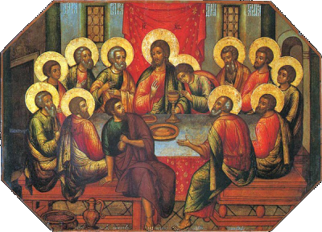
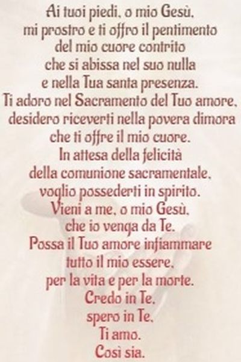

HODIE / Giovedì della I Settimana del Tempo di Avvento
ANTIFONA / Tu sei vicino, o Signore; tutte le tue vie sono verità.Fin da principio ho conosciuto dalla tua testimonianza che tu sei in eterno. (Sal 119,151-152)
ATTO PENITENZIALE / All'inizio di questa celebrazione eucaristica, chiediamo la conversione del cuore, fonte di riconciliazione e di comunione con Dio e con i fratelli. / C: Signore, che sei venuto nel mondo per salvarci, abbi pietà di noi. / A: Signore, pietà. / C: Cristo, che continui a visitarci con la grazia del tuo Spirito, abbi pietà di noi. / A: Cristo, pietà. / C: Signore, che verrai un giorno a giudicare le nostre opere, abbi pietà di noi. / A: Signore, pietà. / C: Dio Onnipotente abbia misericordia di voi, perdoni i vostri peccati e vi conduca alla vita eterna. / A: Amen.
ANTIFONA / Ridesta la tua potenza, Signore, e con grande forza soccorri i tuoi fedeli; la tua grazia vinca le resistenze del peccato ed affretti il momento della salvezza. Per il nostro Signore Gesù Cristo, tuo Figlio, che è Dio, e vive e regna con te, nell'unità dello Spirito Santo, per tutti i secoli dei secoli.
LETTURA1 / Dal libro del profeta Isaia. (Is 26, 1-6) / In quel giorno si canterà questo canto nella terra di Giuda: «Abbiamo una città forte; mura e bastioni egli ha posto a salvezza. Aprite le porte: entri una nazione giusta, che si mantiene fedele. La sua volontà è salda; tu le assicurerai la pace, pace perché in te confida. Confidate nel Signore sempre, perché il Signore è una roccia eterna, perché egli ha abbattuto coloro che abitavano in alto, ha rovesciato la città eccelsa, l'ha rovesciata fino a terra, l'ha rasa al suolo. I piedi la calpestano: sono i piedi degli oppressi, i passi dei poveri». / C: Parola di Dio. / A: Rendiamo grazie a Dio.
PSALMUS / (Sal 117) Benedetto colui che viene nel nome del Signore. / Rendete grazie al Signore perché è buono, perché il suo amore è per sempre. È meglio rifugiarsi nel Signore che confidare nell'uomo. È meglio rifugiarsi nel Signore che confidare nei potenti. / Apritemi le porte della giustizia: vi entrerò per ringraziare il Signore. È questa la porta del Signore: per essa entrano i giusti. Ti rendo grazie, perché mi hai risposto, perché sei stato la mia salvezza. / Ti preghiamo, Signore: dona la salvezza! Ti preghiamo, Signore: dona la vittoria! Benedetto colui che viene nel nome del Signore. Vi benediciamo dalla casa del Signore. Il Signore è Dio, egli ci illumina.
ACCLAMATIO / Alleluia, Alleluia. / Cercate il Signore, mentre si fa trovare, invocatelo, mentre è vicino. (Is 55,6) / Alleluia.
VANGELO / Dal Vangelo secondo Matteo (Mt 7, 21.24-27) / In quel tempo, Gesù disse ai suoi discepoli: «Non chiunque mi dice: "Signore, Signore", entrerà nel regno dei cieli, ma colui che fa la volontà del Padre mio che è nei cieli. Perciò chiunque ascolta queste mie parole e le mette in pratica, sarà simile a un uomo saggio, che ha costruito la sua casa sulla roccia. Cadde la pioggia, strariparono i fiumi, soffiarono i venti e si abbatterono su quella casa, ma essa non cadde, perché era fondata sulla roccia. Chiunque ascolta queste mie parole e non le mette in pratica, sarà simile a un uomo stolto, che ha costruito la sua casa sulla sabbia. Cadde la pioggia, strariparono i fiumi, soffiarono i venti e si abbatterono su quella casa, ed essa cadde e la sua rovina fu grande». / C: Parola del Signore. / A: Lode a Te o Cristo.
OREMUS / Il Padre ha reso Cristo pietra angolare, roccia eterna, sostegno della vita di ogni uomo. Aggrappati alla sua forza, umilmente lo preghiamo dicendo: Noi confidiamo in te, Signore. / Fa' che la tua Chiesa, Signore, radicata profondamente in Cristo, attinga da lui gli insegnamenti per la sua missione nel mondo. Preghiamo: / Illumina, o Signore, i capi dei popoli, perchè con saggezza sappiano costruire l'avvenire del mondo sui valori duraturi della pace e della fratellanza. Preghiamo: / Concedi, o Signore, ai carcerati, ai drogati e a quanti hanno perso la fiducia negli uomini, il coraggio e la fede di ricostruire la loro vita in Cristo, rinnovatore di ogni cosa. Preghiamo: / Dona, o Signore, alla nostra comunità parrocchiale la forza di ricercare la tua volontà anche nelle scelte ordinarie della vita pastorale. Preghiamo: / Fà crollare, o Signore, le illusioni di quanti impostano la loro esistenza sulla vacuità, e dona loro sete e fame dei veri valori. Preghiamo: / Per le vocazioni della nostra diocesi. / Per l'impegno parrocchiale nella catechesi degli adulti. / Ti chiediamo, o Padre, di rafforzare in questo tempo di avvento la nostra fede, perchè essa non vacilli nella prova e nella tentazione, ma diventi più salda e coerente. Per Cristo nostro Signore. Amen.
OFFERTORIO / Accogli, Signore, il pane e il vino, dono della tua benevolenza, e fa' che l'umile espressione della nostra fede sia per noi pegno di salvezza eterna. Per Cristo nostro Signore.
OFFERTORIO / Accetta, Signore, i doni che ti presentiamo, e sia fonte di redenzione e di pace questo sacrificio che cancella i peccati del mondo. Per Cristo nostro Signore.
PREFAZIO / E' veramente cosa buona e giusta, nostro dovere e fonte di salvezza, rendere grazie sempre e in ogni luogo a te, Signore, Padre santo, Dio onnipotente ed eterno, per Cristo nostro Signore. Al suo primo avvento nell'umiltà della nostra natura umana, egli portò a compimento la promessa antica, e ci apri la via dell'eterna salvezza. Verrà di nuovo nello splendore della gloria, e ci chiamerà a possedere il regno promesso che ora osiamo sperare vigilanti nell'attesa. E noi, uniti agli angeli e alla moltitudine dei cori celesti, cantiamo con gioia l'inno della tua lode: Santo, Santo il Signore Dio dell’universo. I cieli e la terra sono pieni della tua gloria. Osanna nell’alto dei cieli. Benedetto colui che viene nel nome del Signore. Osanna nell’alto dei cieli.
PREFAZIO / È veramente giusto renderti grazie e innalzare a te l’inno di benedizione e di lode, Padre onnipotente, principio e fine di tutte le cose. Tu ci hai nascosto il giorno e l’ora, in cui il Cristo tuo Figlio, Signore e giudice della storia, apparirà sulle nubi del cielo rivestito di potenza e splendore. In quel giorno tremendo e glorioso passerà il mondo presente e sorgeranno cieli nuovi e terra nuova. Ora egli viene incontro a noi in ogni uomo e in ogni tempo, perché lo accogliamo nella fede e testimoniamo nell’amore la beata speranza del suo regno. Nell’attesa del suo ultimo avvento, insieme agli angeli e ai santi, cantiamo unanimi l’inno della tua gloria: Santo, Santo il Signore Dio dell’universo. I cieli e la terra sono pieni della tua gloria. Osanna nell’alto dei cieli. Benedetto colui che viene nel nome del Signore. Osanna nell’alto dei cieli.
COMMUNIO / “Non chiunque mi dice: Signore, Signore, entrerà nel regno dei cieli, ma chi fa la volontà del Padre mio”. (Mt 7,21)

COMMUNIO / “Non chiunque mi dice: Signore, Signore, entrerà nel regno dei cieli, ma chi fa la volontà del Padre mio”. (Mt 7,21)
GRATIAS / La partecipazione a questo sacramento, che a noi pellegrini sulla terra rivela il senso cristiano della vita, ci sostenga, Signore, nel nostro cammino e ci guidi ai beni eterni. Per il Cristo nostro Signore.
GRATIAS / O Padre, la forza del tuo Spirito, operante in questi santi misteri, sia per noi sostegno nella vita presente e pegno sicuro della felicità eterna. Per Cristo nostro Signore.
LECTIO
Evangelizo
Sant'Agostino (354-430) / vescovo d'Ippona (Africa del Nord) e dottore della Chiesa / Discorsi sui salmi, Sal 95, § 4 / Costruire una casa / [Dice il salmista:] "Grande è il Signore e degno di ogni lode". Chi è questo Signore grande e degno di ogni lode, se non Gesù Cristo? Voi sapete certamente che egli apparve fra noi nelle sembianze di uomo. Sapete che fu concepito nel grembo di una donna, che nacque, fu allattato e portato in braccio, che fu circonciso e più tardi per lui fu offerto un sacrificio (Lc 2,24) e che divenne gradatamente adulto. Giunto alla fine della vita, egli fu schiaffeggiato, coperto di sputi, coronato di spine, confitto in croce ove morì e fu trafitto dalla lancia. Sapete come egli abbia subito tutta questa serie di umiliazioni; eppure egli è grande e degno di ogni lode. Non disprezzatelo nella sua piccolezza! Pensate quanto sia grande! Si fece piccolo perché voi eravate piccoli; riconoscetene la grandezza e in lui diventerete grandi anche voi. Così infatti va avanti la costruzione di una casa; così aumentano, le dimensioni della casa stessa: mediante, cioè, la crescita delle pietre che vengono adoperate per l'edificio. Crescete dunque e comprendete la grandezza di Cristo! Anche se piccolo egli è grande, grande a dismisura. (...) Quale espressione avrebbe dovuto usare una lingua piccina per lodare un grande? Ha detto: "ogni", sforzandosi di esprimere ciò che sente e crede (...), ma è come se dicesse: "Ciò che io non riesco ad esprimere, immaginalo tu e, dopo che ci avrai meditato, sappi che è ancora poco". E se il pensiero non è in grado di raffigurarselo, potrà la lingua descriverlo a parole? Grande è il Signore, e degno di ogni lode. Lui sia lodato e glorificato e la sua gloria venga proclamata [ovunque]! Così viene edificata la casa.
DiBruno
Ha costruito la sua casa sulla roccia (Mt 7.21-24-27) / La nostra roccia è il Padre. Roccia del Padre, nello Spirito Santo, è Cristo Gesù. Roccia di Cristo Gesù, sempre nello Spirito Santo, è la Chiesa, non però ogni Chiesa, ma solo la Chiesa fondata su Pietro. Quanto il Salmista dice di Dio, il cristiano deve dirlo della Chiesa, fondata su Pietro: “Ti amo, Signore, mia forza, Signore, mia roccia, mia fortezza, mio liberatore, mio Dio, mia rupe, in cui mi rifugio; mio scudo, mia potente salvezza e mio baluardo. Invoco il Signore, degno di lode, e sarò salvato dai miei nemici. Mi circondavano flutti di morte, mi travolgevano torrenti infernali; già mi avvolgevano i lacci degli inferi, già mi stringevano agguati mortali. Nell’angoscia invocai il Signore, nell’angoscia gridai al mio Dio: dal suo tempio ascoltò la mia voce, a lui, ai suoi orecchi, giunse il mio grido. La terra tremò e si scosse; vacillarono le fondamenta dei monti, si scossero perché egli era adirato. Dalle sue narici saliva fumo, dalla sua bocca un fuoco divorante; da lui sprizzavano carboni ardenti. Abbassò i cieli e discese, una nube oscura sotto i suoi piedi” (Sal 18(17) 1-10). La Chiesa fondata su Pietro deve essere questa roccia eterna sulla quale ognuno potrà costruire la sua casa, senza né timore né paura che essa possa crollare a causa dei venti e della pioggia. / Quando la Chiesa è vera roccia di salvezza? Quando essa è vera Parola di Cristo Gesù così come Cristo Gesù è vera Parola del Padre. Quando ogni ministro della Parola potrà dire come Gesù Signore: «Chi crede in me, non crede in me ma in colui che mi ha mandato; chi vede me, vede colui che mi ha mandato. Io sono venuto nel mondo come luce, perché chiunque crede in me non rimanga nelle tenebre. Se qualcuno ascolta le mie parole e non le osserva, io non lo condanno; perché non sono venuto per condannare il mondo, ma per salvare il mondo. Chi mi rifiuta e non accoglie le mie parole, ha chi lo condanna: la parola che ho detto lo condannerà nell’ultimo giorno. Perché io non ho parlato da me stesso, ma il Padre, che mi ha mandato, mi ha ordinato lui di che cosa parlare e che cosa devo dire. E io so che il suo comandamento è vita eterna. Le cose dunque che io dico, le dico così come il Padre le ha dette a me» (Gv 12,44-50). Se la Chiesa, nei suoi Apostoli e ministri della Parola, non potrà fare questa confessione di fede, condannerà il mondo intero a costruire la sua casa sulla sabbia della falsità, della menzogna, dell’inganno, dell’ingiustizia, del pensiero di Satana. La responsabilità è altissima, perché di vita eterna, ma anche di morte eterna. Se la Chiesa è roccia di Cristo, chi costruisce sulla sua Parola costruisce una casa eterna. Se non è roccia di Cristo, chi costruisce su di essa, costruisce per l’inferno. / In quel tempo, Gesù disse ai suoi discepoli: «Non chiunque mi dice: “Signore, Signore”, entrerà nel regno dei cieli, ma colui che fa la volontà del Padre mio che è nei cieli. Perciò chiunque ascolta queste mie parole e le mette in pratica, sarà simile a un uomo saggio, che ha costruito la sua casa sulla roccia. Cadde la pioggia, strariparono i fiumi, soffiarono i venti e si abbatterono su quella casa, ma essa non cadde, perché era fondata sulla roccia. Chiunque ascolta queste mie parole e non le mette in pratica, sarà simile a un uomo stolto, che ha costruito la sua casa sulla sabbia. Cadde la pioggia, strariparono i fiumi, soffiarono i venti e si abbatterono su quella casa, ed essa cadde e la sua rovina fu grande». / Se il ministro della Parola vuole esse roccia di Cristo, come Cristo è roccia del Padre, deve predicare con lo stesso coraggio apostolico di Paolo: “Siano rese grazie a Dio, il quale sempre ci fa partecipare al suo trionfo in Cristo e diffonde ovunque per mezzo nostro il profumo della sua conoscenza! Noi siamo infatti dinanzi a Dio il profumo di Cristo per quelli che si salvano e per quelli che si perdono; per gli uni odore di morte per la morte e per gli altri odore di vita per la vita. E chi è mai all’altezza di questi compiti? Noi non siamo infatti come quei molti che fanno mercato della parola di Dio, ma con sincerità e come mossi da Dio, sotto il suo sguardo, noi parliamo in Cristo” (2Cor 2,14-17). Mercanteggiare la Parola, vendere e svendere Cristo a nulla serve. È illusione pensare di poter costruire la casa del mondo sulla pace, escludendo Cristo. Il Principe della Pace è Cristo, e la Pace, quella vera, si costruisce in Lui, con Lui, per Lui. / Madre di Dio, Angeli, Santi, fate che ogni cristiano sia Roccia di Cristo Gesù.
GetUpAndWalk
Le parole che pronunciamo, le persone a cui prestiamo ascolto, le azioni che compiamo… di tutto ciò parla Gesù ai suoi discepoli alla fine del discorso sulla montagna. E lo fa con un intento preciso: aiutarli a ridare ordine ad aspetti della loro vita che talora possono essere scollegati gli uni dagli altri. Si tratta, allora, di rimettere in sincronia – per usare un’immagine sintetica – bocca, orecchie e mani. Perché anche le nostre parole all’apparenza più belle, più generose, più nobili sono vuote, se non sono radicate nell’ascolto di chi invochiamo come nostro Signore. E non basta ascoltare, se poi scegliamo di costruire la nostra vita confidando solo sulla sabbia delle nostre autosufficienze, invece che sulla roccia del suo amore. Fondarci su questa roccia non ci mette al riparo dal dolore, dalle disillusioni o dai fallimenti, ma ci dà la forza necessaria per non esserne abbattuti, per scorgere la speranza anche nella peggiore delle tempeste. Gesù incoraggia i suoi discepoli e incoraggia noi: sa che avremo sempre come compagne piccole o grandi incoerenze, ma ciò che conta è lavorare con lui per riannodare di volta in volta i fili della nostra vita che si sono sfrangiati, per ritessere il nostro cuore a immagine del suo. / A chi presto ascolto di solito nella mia vita? A quale tipo di messaggi do spazio? Attraverso le mie parole che cosa trasmetto, che cosa comunico di me stesso? Nella mia quotidianità su che cosa faccio affidamento? (Giuseppe Riggio SJ)
Preghiamo
Dio di bontà e di misericordia, che ci chiedi di collaborare alla tua opera di salvezza, manda numerosi e santi operai per la tua vigna, perché alla tua Chiesa non manchino mai annunciatori coraggiosi del Vangelo, sacerdoti che ti offrano anche con la vita il sacrificio dell'Eucarestia e che quali segni splendenti di Cristo buon pastore, guidino il tuo popolo sulle strade della carità. Manda il tuo Spirito Santo a rinfrancare il cuore dei giovani, perché abbiano il coraggio di dirti Sì quando li chiami al servizio dei fratelli, la perseveranza nel seguire Gesù anche sulla via della croce e la gioia grande di essere nel mondo testimoni del tuo amore. O Maria, Madre dei sacerdoti, dona a tutti i membri della Chiesa pisana la tua stessa fedeltà per testimoniare a tutti la gioia che nasce dall'incontro con Cristo che vive e regna nei secoli in eterno. Amen. (Giovanni Paolo Benotto Vescovo di Pisa)
Offriamo in questa giornata la nostra preghiera e le nostre azioni al Signore per tutte le famiglie, perché siano segno di comunione, di fedeltà e di accoglienza della vita. In modo particolare, preghiamo perché ci siano nella Chiesa e nel mondo uomini e donne che, consapevoli dell'importanza della loro vocazione, coltivino l'arte della collaborazione reciproca nell'annuncio e nella testimonianza del Vangelo, con il proprio lavoro, servizio o missione.
Scritti
Si affrettarono a ciò che era estraneo alla loro natura / Se uno cammina in questa vita con noncuranza e indolenza, senza fare attenzione, e non rigetta di sua propria volontà ogni mondano desiderio e non volge ogni suo desiderio a cercare soltanto il Signore, viene ferito dalle spine e dagli arbusti di questo mondo ... Che cosa può fare Dio a chi di sua propria volontà si consegna al mondo e si lascia illudere e ingannare dai suoi piaceri e da inquietudini materiali? Dio accorda il suo aiuto a chi si allontana dai piaceri terreni e dalle abitudini di un tempo, a chi fa violenza al proprio pensiero trascinandolo in ogni momento verso il Signore, rinnega se stesso (cf. Le 9,2 3) e cerca soltanto il Signore. Dio protegge chi si pone al sicuro ovunque sfuggendo alle reti e ai lacci della selva del mondo, chi lavora alla propria salvezza con timore e tremore (Fil 2, 1 2) e attraversa le reti, i lacci e le concupiscenze di questo mondo con ogni cautela, cerca l'aiuto del Signore e spera di essere salvato, per grazia, dalla sua misericordia. Vedi, le cinque vergini sapienti (cf. Mt 25,1-13) furono vigilanti e si affrettarono a ciò che era estraneo alla loro natura accogliendo nei vasi del loro cuore l'olio, cioè la grazia dello Spirito che viene dall'alto, e così poterono entrare con lo sposo nella sala delle nozze del cielo. Le altre, invece, le stolte, chiuse nella loro natura, non vegliarono né si adoperarono per ricevere nei loro vasi l'olio di esultanza (Sal 44 [45],8), poiché erano ancora nella carne, ma per così dire sprofondarono nel sonno a motivo della loro negligenza, leggerezza, pigrizia, ignoranza o forse anche per presunzione di giustizia. Per questo furono escluse dalla sala nuziale del Regno, perché non potevano essere gradite allo sposo celeste. Prigioniere di vincoli mondani e di un qualche amore terreno, non donarono allo sposo celeste tutto il loro amore e la loro passione, né si diedero pensiero dell'olio. E infatti le anime che cercano ciò che è estraneo alla loro natura, la santificazione dello Spirito (2Ts 2,13; 1Pt 1), vincolano tutto il loro amore al Signore, in lui camminano (Col 2,6), in lui pregano, in lui pensano, a tutto rinunciando. Per questo sono giudicate degne di ricevere l'olio della grazia celeste e possono così passare attraverso questo mondo senza vacillare e possono piacere in tutto allo sposo spirituale. Le anime che si attengono alla loro natura, infatti, si trascinano sulla terra con i loro pensieri, pensano alle cose della terra, il loro cuore dimora sulla terra e giacciono nell'illusione di appartenere allo sposo e di essere adorne della giustificazione della carne, ma non sono state generate dall'alto (Gv 3,3), dallo Spirito, poiché non hanno ricevuto l'olio di esultanza. (Pseudo-Macario, Omelie 4,5-6)